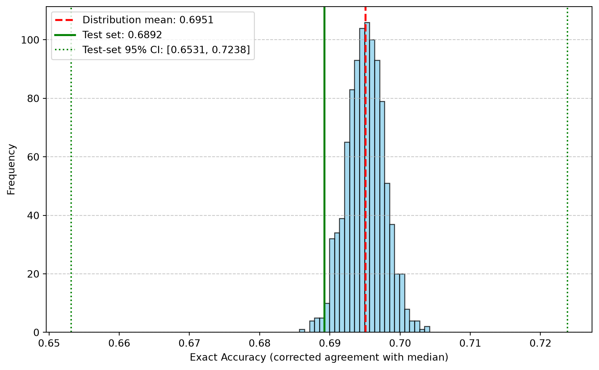
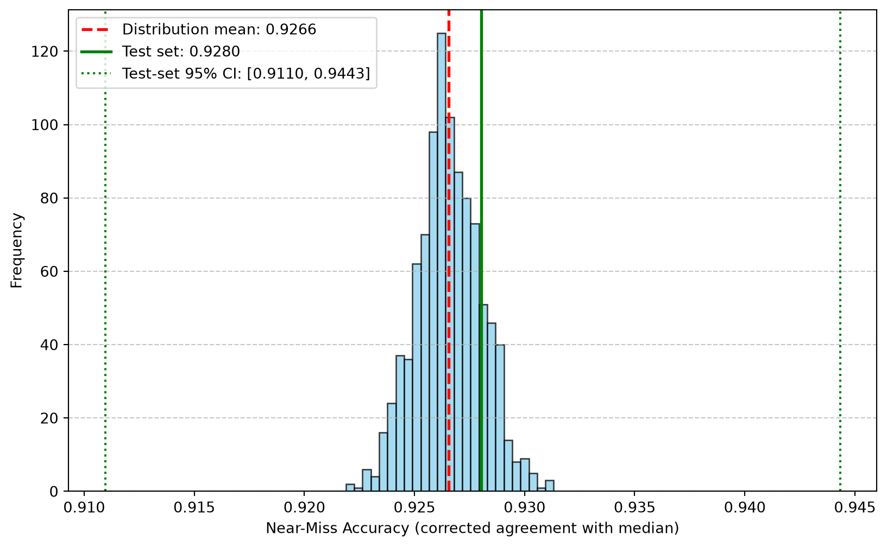
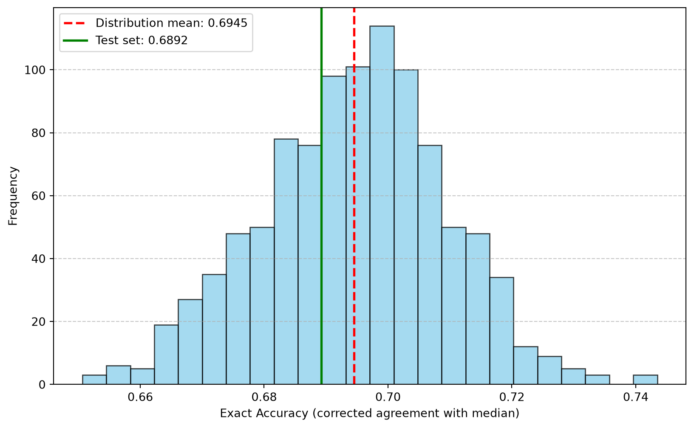
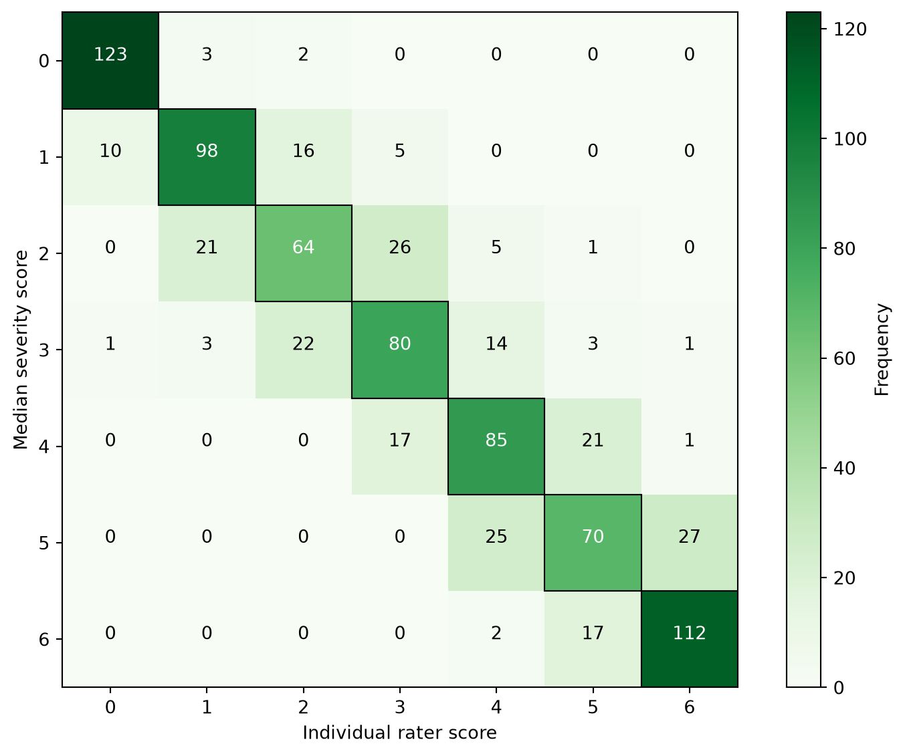

Locate the specific medoid_64 held-out test set within the distribution of human rater agreement, so model test accuracy can be compared against a like-for-like human benchmark.
Hypothesis:
The test set’s human agreement will fall within the distribution of human agreement (i.e. it is a plausible draw, not an anomalously easy or hard subset).
Rationale:
Model test accuracy and near-miss accuracy are reported on this one fixed test split. To judge whether the model matches human raters, the human benchmark must be computed on the same CDAs. The test set is small (44 CDAs/class), so its human value will differ from the full-dataset mean by chance; what matters is that it sits comfortably within the distribution of agreement values you would get from any test-sized draw - because that single value is exactly what the model is compared against.
Only Metric 3 is used here - median agreement corrected for the median-of-3 tautology - the chosen benchmark from uv-agroinfiltration-dataset (analyses/03_human_performance). Its full-dataset distribution (1,000 iterations of stratified undersampling to 436 CDAs/class) is loaded from that repo’s cache; the human_performance functions are imported from there too, so the test-set value is computed with identical methodology.
Two reference distributions are shown:
Full-dataset distribution (436 CDAs/class) - the cached distribution. Very tight, because each draw uses ~10x more data than the test set and the draws overlap heavily.
Test-sized distribution (44 CDAs/class) - generated here. Same undersampling procedure at the test set’s own size, so its spread reflects the real sampling noise of a 308-CDA estimate. This is the distribution the test-set value should be judged against.
1. Setup
1.1 Import required libraries
Code
# 1.1import reimport sysfrom pathlib import Pathimport matplotlib.pyplot as pltimport numpy as npimport pandas as pdimport scipy.stats as stfrom sklearn.metrics import confusion_matrixrepo_root =next(p for p in [Path.cwd(), *Path.cwd().parents] if (p /'.git').exists())# The rater data, the cached Metric 3 distribution, and the human_performance# functions all live in the sibling uv-agroinfiltration-dataset repo. Importing# them directly guarantees every human value is computed with byte-identical# methodology.uv_repo = repo_root.parent /"uv-agroinfiltration-dataset"sys.path.append(str(uv_repo /"src"))import human_performance # noqa: E402
1.2 Paths
Code
# 1.2# Cached Metric 3 full-dataset distribution (436/class, 1,000 iterations).uv_hp_dir = uv_repo /"analyses"/"03_human_performance"metric3_path = uv_hp_dir /"metric3_resampling.csv"# Anonymised rater data (one row per CDA: three rater scores + their median).# Use this repo's own tracked copy of the rater table rather than reaching into the# sibling repo. That path broke when the sibling renamed 04_median_and_centre_coords -># 04_representative_bounding_box_and_score; data/combined_cda_data_median.csv here is# byte-identical to it and is version-controlled with this analysis.rater_data_path = repo_root /"data"/"combined_cda_data_median.csv"# The medoid_64 dataset definition - the fixed train/val/ensemble/test split.split_path = repo_root /"data"/"datasets"/"medoid_64"/"medoid_64.csv"analysis_dir = repo_root /"analyses"/"02_human_performance"thesis_plots_dir = analysis_dir /"thesis_plots"# Local cache for the test-sized distribution generated in section 4.testsize_cache_path = analysis_dir /"metric3_testsize_resampling.csv"
2. Load the cached full-dataset distribution
1,000 exact and near-miss values, one pair per iteration of stratified undersampling to 436 CDAs/class. Loaded, not recomputed.
3. Map the medoid_64 test set onto the rater data and compute its value
The medoid_64 filenames encode the CDA as <Basename>_<Row>_<Col>_<Pos>.tif. Stripping the trailing _Row_Col_Pos and the extension recovers the Basename, which matches the rater data case-insensitively. Every test CDA maps to a rater record, and its medoid_64 label equals the rater Median_Score - a check that the mapping is correct.
Code
# 3rater_data = pd.read_csv(rater_data_path)split_manifest = pd.read_csv(split_path)def cda_key(basename_stem, row, col, pos):"""Case-insensitive join key shared by both datasets."""returnf"{str(basename_stem).lower()}_{int(row)}_{int(col)}_{int(pos)}"rater_data["key"] = [ cda_key(re.sub(r"\.[^.]+$", "", b), r, c, p)for b, r, c, p inzip(rater_data["Basename"], rater_data["Row"], rater_data["Col"], rater_data["Pos"])]test_split = split_manifest[split_manifest["split"] =="test"].copy()def parse_filename(filename): stem = re.sub(r"\.[^.]+$", "", filename) match = re.match(r"^(.*)_(\d+)_(\d+)_(\d+)$", stem)return cda_key(match.group(1), match.group(2), match.group(3), match.group(4))test_split["key"] = test_split["filename"].map(parse_filename)rater_test = rater_data[rater_data["key"].isin(set(test_split["key"]))].copy()# Integrity checks.assertlen(rater_test) ==len(test_split), (f"Mapped {len(rater_test)} rater records but the test split has {len(test_split)} CDAs.")merged_check = test_split.merge( rater_data[["key", "Median_Score"]].drop_duplicates("key"), on="key", how="left")assert (merged_check["label"] == merged_check["Median_Score"]).all(), ("medoid_64 label does not equal the rater Median_Score for every test CDA.")print(f"All {len(rater_test)} test CDAs mapped; medoid_64 label == rater Median_Score for all of them.")print(f"Per-class test count:\n{test_split['label'].value_counts().sort_index().to_string()}")def metric3_values(rater_wide):"""Metric 3 exact & near-miss on a wide-format rater table of CDAs. Each row is given a unique synthetic CDA id so that bootstrap resamples (which draw whole CDAs with replacement, producing duplicate Basename/Row/ Col/Pos) still uniquely identify each CDA for wide_to_long and for the per-CDA grouping inside corrected_median_agreement. This does not change the result on any table whose CDAs are already unique. """ rw = rater_wide.copy() rw["Basename"] = np.arange(len(rw)) rw["Row"] = rw["Col"] = rw["Pos"] =0long= ( pd.wide_to_long(rw, stubnames=["Scorer", "Score"], i=["Basename", "Row", "Col", "Pos"], j="num") .reset_index() .dropna(subset=["Score"]) ) corrected = human_performance.corrected_median_agreement(long)return corrected["Exact_Match"].mean(), corrected["NearMiss_Match"].mean()test_exact, test_near = metric3_values(rater_test)# CDA-level bootstrap (resample whole CDAs with replacement) for a 95% CI on the# fixed test-set point.rng = np.random.default_rng(42)cda_ids = rater_test.index.to_numpy()boot_exact, boot_near = [], []for _ inrange(1000): sample = rater_test.loc[rng.choice(cda_ids, size=len(cda_ids), replace=True)] e, n = metric3_values(sample) boot_exact.append(e) boot_near.append(n)test_exact_ci = (np.quantile(boot_exact, 0.025), np.quantile(boot_exact, 0.975))test_near_ci = (np.quantile(boot_near, 0.025), np.quantile(boot_near, 0.975))print(f"\nMetric 3 test-set value:")print(f" Exact: {test_exact *100:.2f}% (bootstrap 95% CI {test_exact_ci[0] *100:.2f}-{test_exact_ci[1] *100:.2f}%)")print(f" Near-Miss: {test_near *100:.2f}% (bootstrap 95% CI {test_near_ci[0] *100:.2f}-{test_near_ci[1] *100:.2f}%)")
All 308 test CDAs mapped; medoid_64 label == rater Median_Score for all of them.
Per-class test count:
label
0 44
1 44
2 44
3 44
4 44
5 44
6 44
Metric 3 test-set value:
Exact: 68.92% (bootstrap 95% CI 65.31-72.38%)
Near-Miss: 92.80% (bootstrap 95% CI 91.10-94.43%)
4. Generate the test-sized distribution (44 CDAs/class)
The same stratified-undersampling procedure as the cached distribution, but drawing 44 CDAs/class (the test set’s size) instead of 436, over 1,000 seeds. This distribution’s spread is the genuine sampling noise of a test-sized estimate, so it is the fair reference for the single test-set value. Cached to CSV so re-renders are instant.
Code
# 4n_per_class =int(test_split["label"].value_counts().min()) # 44if testsize_cache_path.exists(): ts = pd.read_csv(testsize_cache_path) testsize_exact = ts["exact"].to_numpy() testsize_near = ts["near"].to_numpy()print(f"Loaded cached test-sized distribution ({len(testsize_exact)} iterations, {n_per_class} CDAs/class).")else:print(f"Generating test-sized distribution ({n_per_class} CDAs/class, 1,000 iterations)...") testsize_exact, testsize_near = [], []for seed inrange(1, 1001): sub = rater_data.groupby("Median_Score", group_keys=False).sample(n=n_per_class, random_state=seed) e, n = metric3_values(sub) testsize_exact.append(e) testsize_near.append(n) testsize_exact = np.array(testsize_exact) testsize_near = np.array(testsize_near) pd.DataFrame({"exact": testsize_exact, "near": testsize_near}).to_csv(testsize_cache_path, index=False)print("Done and cached.")
Loaded cached test-sized distribution (1000 iterations, 44 CDAs/class).
5. Where the test-set value sits in each distribution
Code
# 5def dist_report(dist, test_value, name): dist = np.asarray(dist) mean =float(np.mean(dist)) sd =float(np.std(dist)) pct =float((dist < test_value).mean() *100)print(f"{name}")print(f" distribution: mean {mean:.4f}, SD {sd:.4f}, 95% range [{np.quantile(dist, 0.025):.4f}, {np.quantile(dist, 0.975):.4f}]")print(f" test value {test_value:.4f} -> {pct:.1f}th percentile\n")print("=== EXACT ===")dist_report(full_exact, test_exact, "Full-dataset distribution (436/class)")dist_report(testsize_exact, test_exact, "Test-sized distribution (44/class)")print("=== NEAR-MISS ===")dist_report(full_near, test_near, "Full-dataset distribution (436/class)")dist_report(testsize_near, test_near, "Test-sized distribution (44/class)")
=== EXACT ===
Full-dataset distribution (436/class)
distribution: mean 0.6951, SD 0.0027, 95% range [0.6900, 0.7004]
test value 0.6892 -> 1.5th percentile
Test-sized distribution (44/class)
distribution: mean 0.6945, SD 0.0150, 95% range [0.6641, 0.7219]
test value 0.6892 -> 34.7th percentile
=== NEAR-MISS ===
Full-dataset distribution (436/class)
distribution: mean 0.9266, SD 0.0015, 95% range [0.9237, 0.9295]
test value 0.9280 -> 84.3th percentile
Test-sized distribution (44/class)
distribution: mean 0.9262, SD 0.0084, 95% range [0.9084, 0.9414]
test value 0.9280 -> 56.6th percentile
The percentile against the full-dataset distribution can look extreme because that distribution is far tighter than the test set’s own sampling error (more data, overlapping draws). The test-sized distribution is the honest reference: it shows the test value is an ordinary draw. Either way, the model is compared against the single test-set value, so all that matters is that it lies within the range of plausible human agreement - which it does.
The cached distribution. The test-set value’s bootstrap 95% CI (dashed) shows that its distance from the mean is small relative to its own uncertainty.
Code
# 6.1plot_distribution(full_exact, str(thesis_plots_dir /"metric3_exact_full_dataset_dist.png"),"Exact Accuracy (corrected agreement with median)", test_exact, test_exact_ci)plot_distribution(full_near, str(thesis_plots_dir /"metric3_nearmiss_full_dataset_dist.png"),"Near-Miss Accuracy (corrected agreement with median)", test_near, test_near_ci)

Metric 3 human agreement over 1,000 iterations of stratified undersampling to 436 CDAs/class, with the medoid_64 test-set value and its bootstrap 95% CI. (a) Exact. (b) Near-miss.

6.2 Test-sized distribution (44 CDAs/class)
The reference at the test set’s own size. The histogram’s spread is the real sampling noise of a 308-CDA estimate, and the test-set value (green) sits well inside it.
Code
# 6.2plot_distribution(testsize_exact, str(thesis_plots_dir /"metric3_exact_test_sized_dist.png"),"Exact Accuracy (corrected agreement with median)", test_exact)plot_distribution(testsize_near, str(thesis_plots_dir /"metric3_nearmiss_test_sized_dist.png"),"Near-Miss Accuracy (corrected agreement with median)", test_near)

Metric 3 human agreement over 1,000 iterations of stratified undersampling to 44 CDAs/class (the test set’s size), with the medoid_64 test-set value. (a) Exact. (b) Near-miss.
7. Interpretation
Code
# 7print("Metric 3 human benchmark on the medoid_64 test set (the value the model is compared against):")print(f" Exact: {test_exact *100:.2f}%")print(f" Near-Miss: {test_near *100:.2f}%")print(f"\nTest-sized distribution (44/class) means: exact {np.mean(testsize_exact) *100:.2f}%, near-miss {np.mean(testsize_near) *100:.2f}%")
Metric 3 human benchmark on the medoid_64 test set (the value the model is compared against):
Exact: 68.92%
Near-Miss: 92.80%
Test-sized distribution (44/class) means: exact 69.45%, near-miss 92.62%
The test-set value lies within the test-sized distribution of human agreement, so the held-out split is a plausible, representative draw. Its small size means it can sit a little either side of the full-dataset mean by chance, but that is immaterial: the model’s exact and near-miss test accuracy are compared directly against this single value, measured on the identical, class-balanced test CDAs.
8. Confusion matrix
Drawn with _plot_confusion_matrix from src/cnn_base.py, so it matches every model confusion matrix in this project: counts rather than proportions, the Greens colour map, a “Frequency” colour bar and a black border on the diagonal.
Rows are a CDA’s median score, columns are what an individual rater gave it, one entry per rater judgement. The tautological matches Metric 3 removes – the rater whose own score is the median when all three disagree – are excluded, so the diagonal counts genuine agreement only.
Code
# 8import sys as _sys_sys.path.append(str(repo_root /"src"))from cnn_base import _plot_confusion_matrix # noqa: E402# Same wide-to-long reshape metric3_values uses, so the matrix counts exactly the rater# judgements Metric 3 scores._rw = rater_test.copy()_rw["Basename"] = np.arange(len(_rw))_rw["Row"] = _rw["Col"] = _rw["Pos"] =0_long = (pd.wide_to_long(_rw, stubnames=["Scorer", "Score"], i=["Basename", "Row", "Col", "Pos"], j="num") .reset_index().dropna(subset=["Score"]))corrected = human_performance.corrected_median_agreement(_long)keep =~((corrected.Agreement_Pattern =="All different") & corrected.Raw_Exact_Match)cm = (pd.crosstab(corrected.loc[keep, "Median_Score"].astype(int), corrected.loc[keep, "Score"].astype(int)) .reindex(index=range(7), columns=range(7), fill_value=0).to_numpy())_plot_confusion_matrix(cm, np.arange(7), ("Median severity score", "Individual rater score"),str(thesis_plots_dir /"human_confusion_matrix.png"))# Exported so other analyses can difference their own matrices against this baseline.# Counts are not comparable across analyses (917 rater judgements here against 308 model# predictions), so consumers must row-normalise both before subtracting.## An eighth column carries the tautological judgements Metric 3 removes. They cannot go# anywhere else: each one has Score == Median_Score exactly, so its only cell is the# diagonal, which is the cell the correction forbids. Dropping them from the table# entirely leaves 875 judgements, and row-normalising over 875 gives a human diagonal of# 72.23% while the reported Metric 3 rate divides the same diagonal by 917 and gets# 68.92%. Any consumer that row-normalises the 7-column form is therefore comparing a# model against an inflated human rate. Keeping them as their own column restores the 917# denominator and makes the row proportions directly comparable with a model's.taut = (corrected.loc[ (corrected.Agreement_Pattern =="All different") & corrected.Raw_Exact_Match,"Median_Score"].astype(int).value_counts().reindex(range(7), fill_value=0).to_numpy())cm_full = np.hstack([cm, taut[:, None]])assert cm_full.sum() ==len(corrected), "the eight-column matrix must hold every judgement"assertabs(np.trace(cm) / cm_full.sum() -0.6892) <5e-4, "must reproduce the Metric 3 rate"pd.DataFrame(cm_full, index=range(7), columns=[*range(7), "tautological"]).to_csv( thesis_plots_dir /"human_confusion_matrix.csv")print(f"tautological judgements per median score: {taut.tolist()} (total {int(taut.sum())})")print(f"diagonal / all {int(cm_full.sum())} judgements = {np.trace(cm) / cm_full.sum():.4f}")print(f"{cm.sum()} rater judgements counted; {np.trace(cm)} on the diagonal "f"({np.trace(cm) / cm.sum():.4f})")
2026-09-14 00:16:23.609788: I tensorflow/core/platform/cpu_feature_guard.cc:210] This TensorFlow binary is optimized to use available CPU instructions in performance-critical operations.
To enable the following instructions: AVX2 FMA, in other operations, rebuild TensorFlow with the appropriate compiler flags.

Human rater agreement with the median on the 308 medoid_64 test CDAs, Metric 3 (corrected).
tautological judgements per median score: [0, 2, 14, 8, 8, 10, 0] (total 42)
diagonal / all 917 judgements = 0.6892
875 rater judgements counted; 632 on the diagonal (0.7223)